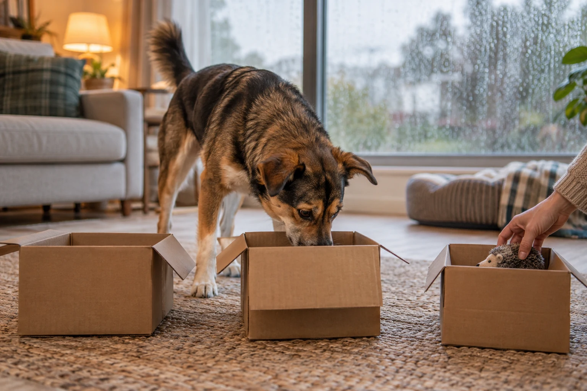

15 Rainy-Day Enrichment Games for Dogs

A wet forecast does not require a marathon hallway fetch session. The best indoor games give a dog a clear job: search, choose, carry, follow, solve or settle. Pick two or three, keep each round short, and make the next round only slightly harder.
Researched by the CanMyPet Editorial Team · Prepared October 13, 2026 · Checked against the sources listed below.
- 5 minutes: an easy scent search to get the nose working.
- 5 minutes: one movement game on a non-slip surface.
- 5 minutes: a simple training or sorting challenge.
- 5 minutes: a slower puzzle or settle-on-a-mat finish.
That is a menu, not a quota. Stop sooner if your dog wanders away, starts guessing wildly or turns the equipment into a demolition project.
Before you start: make the room boringly safe
Indoor enrichment works best when the setup removes obvious trouble. Clear breakables and trailing cords, close access to rooms that are off-limits, and use carpet or a rug for any game that involves turning. Choose toys and containers that fit your dog, supervise DIY materials, and remove an item if the dog starts tearing off and swallowing pieces.
Use part of the dog's normal meal for food games when practical instead of adding a second meal's worth of rewards. Food is optional: favorite toys, praise and another round of the game can all be rewards. The ASPCA's DIY enrichment guidance also emphasizes active supervision around homemade items.
Choose the game by what your dog enjoys
| If your dog loves… | Start with | Use as the reward |
|---|---|---|
| Sniffing every inch of a walk | Find it, box search, toy hunt | The discovery itself, food or a toy |
| Carrying things | Special delivery, cleanup basket | Another object to carry or a short tug |
| Following people | Hide-and-seek, room-to-room recall | Praise, reunion and another round |
| Learning cues | Trick ladder, name-that-toy | Food, play or access to the next task |
| Working things out slowly | Muffin-tin puzzle, towel trail | Small discoveries spread through the puzzle |
Five nose-first games
Find it
Let your dog see you place or gently toss one reward a short distance away. Say “find it” once, then wait. After several easy wins, place the reward partly behind a furniture leg or just around a doorway.
Upgrade: ask for a brief wait while you make two easy placements.
Which hand?
Hide a reward in one closed hand and present both hands at nose height. Open the chosen hand when the dog clearly investigates it. Keep the hands still so the puzzle is about scent, not chasing fingers.
Upgrade: swap hands behind your back between rounds.
Three-box search
Place three clean, open boxes on the floor. Put a toy or reward in one while the dog watches, then invite a search. Once the idea is clear, set up the boxes while the dog waits in another room.
Upgrade: change the spacing rather than adding a mountain of boxes.
Muffin-tin puzzle
Place a few pieces of kibble in a muffin tin and cover some cups with dog-safe balls or toys that are too large to swallow. Let the dog move the covers to investigate. This mirrors the simple puzzle described by the ASPCA and AKC.
Upgrade: vary which cups hold food.
Find the favorite toy
Show the dog a familiar toy, place it in an obvious spot and use one search cue. Gradually move it behind an open door or beside a chair. Celebrate the find with a short play session.
Upgrade: hide the toy while the dog waits out of sight.
Five games that involve you
Hide-and-seek
Have one person stay with the dog while another hides somewhere easy. Call once, praise the search and make the reunion the reward. Blue Cross recommends starting with obvious hiding places so the game stays fun.
Upgrade: stop calling continuously and let the dog search.
Room-to-room recall
Two people stand in different rooms and take turns calling the dog. Reward each arrival, then change positions. In a one-person household, alternate between a bed or mat cue and a recall across the room.
Upgrade: add one corner, never more speed.
Tug with a pause
Invite the dog to take a sturdy tug toy. After a short round, make the toy still. When the dog releases, restart the fun. This turns the pause into part of the game instead of a battle over the toy.
Upgrade: add consistent “take” and “drop” cues.
Carpet retrieve
Roll or gently toss a soft toy along a clear, carpeted lane. Keep throws low and straight. Blue Cross specifically recommends non-bouncy toys and carpet for indoor fetch to reduce slipping and household damage.
Upgrade: ask for a pause before each send.
Name that toy
Pick one toy and use the same short name every time you begin playing with it. Later, place it beside one different toy and ask for the named one. Reward the choice with play, not a lecture after a mistake.
Upgrade: add a second named toy only after the first is reliable.
Five jobs for busy paws and brains
Living-room trail
Create a route around a chair, across a rug and onto a mat. Walk it slowly with your dog. The goal is following the path and changing direction, not clearing obstacles.
Upgrade: reverse the route or add a pause station.
Special delivery
Offer a safe familiar toy, walk together to another person or room, and trade it for praise or play. If the dog already likes carrying, the delivery becomes a simple household job.
Upgrade: send the dog between two clearly visible people.
Toy cleanup basket
Start beside a wide, stable basket. Hand over one toy, hold the basket below it and reward any drop into the basket. Move the toy only a little farther away after the drop is easy.
Upgrade: clean up two toys before the game ends.
Three-step trick ladder
Choose three cues your dog already knows, such as touch, sit and spin. Reward each cue at first, then reward after two and finally all three. Keep the sequence predictable before changing the order.
Upgrade: replace one familiar cue with one new, easy behavior.
Towel trail to a mat
Lay a towel flat and scatter a few pieces of the dog's meal through its folds without knotting it. Place the towel beside a bed or mat. When the search is finished, reward settling on the mat.
Upgrade: use fewer, looser folds rather than tying fabric around food.
How to make a game harder without making it frustrating
Change only one variable at a time. Move the object farther away, add one more container, wait a little longer before giving the cue, or switch rooms. Do not change distance, number of choices and visibility in the same round. AKC scent-work guidance similarly recommends beginning in a low-distraction area and increasing difficulty gradually.
Watch the process, not just the finish. A dog who searches methodically, returns to the game and can pause between rounds is telling you the level makes sense. If the dog starts grabbing every object, barking at you or leaving, reset with one easy success and end.
A seven-day rotation that avoids toy overload
| Day | Nose game | Movement or teamwork | Finish |
|---|---|---|---|
| Monday | Find it | Room-to-room recall | Mat |
| Tuesday | Which hand? | Tug with a pause | Cleanup basket |
| Wednesday | Three-box search | Living-room trail | Quiet chew or rest |
| Thursday | Favorite-toy hunt | Hide-and-seek | Mat |
| Friday | Muffin-tin puzzle | Carpet retrieve | Cleanup basket |
| Weekend | Dog's favorite repeat | Three-step trick ladder | Rest |
You do not need all 15 games in one week. Repeating a favorite while changing one detail often produces better engagement than presenting a brand-new contraption every day.
Frequently asked questions
Can indoor games replace a walk on a rainy day?
Indoor games can add useful mental engagement and gentle movement when weather limits outdoor time, but they are not an automatic one-for-one replacement for every dog's normal routine. Match the day to your dog and return to appropriate outdoor activity when conditions allow.
How long should an indoor enrichment session last?
Start with a few focused minutes and stop while the dog is still successful. Several short sessions are usually easier to manage than one long, increasingly frantic session.
What if my dog is not motivated by food?
Use a favorite toy, a short tug game, praise, access to the next room, or a chance to search for a person. The best reward is the one your dog actually wants in that moment.
Are cardboard enrichment games safe for dogs?
They can be used under active supervision. Remove staples, tape, plastic and loose packing material, choose clean boxes, and end the game if the dog starts swallowing cardboard rather than searching.
Sources
- ASPCA — Canine DIY Enrichment (food puzzles, box searches, scent games and active supervision)
- American Kennel Club — Indoor Scent Games for Dogs (muffin-tin, cup and box searches)
- American Kennel Club — Training for the Virtual Scent Work Test (progressive difficulty and low-distraction starts)
- Blue Cross — Indoor Games for Dogs (find it, hide-and-seek, indoor fetch and toy-name games)
- Blue Cross — How to Play with Your Dog (reviewed May 20, 2024; tug, searching and safe play)
For general enrichment information only. Supervise DIY games, use equipment that suits your dog and your space, and follow any activity limits already given for your dog.